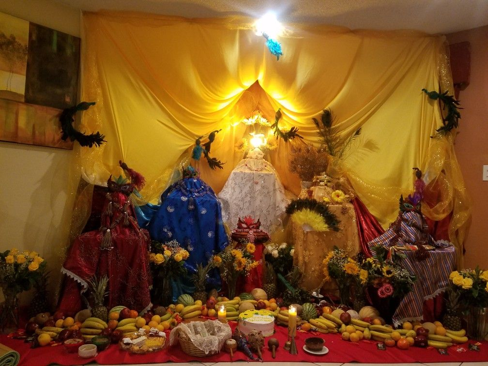
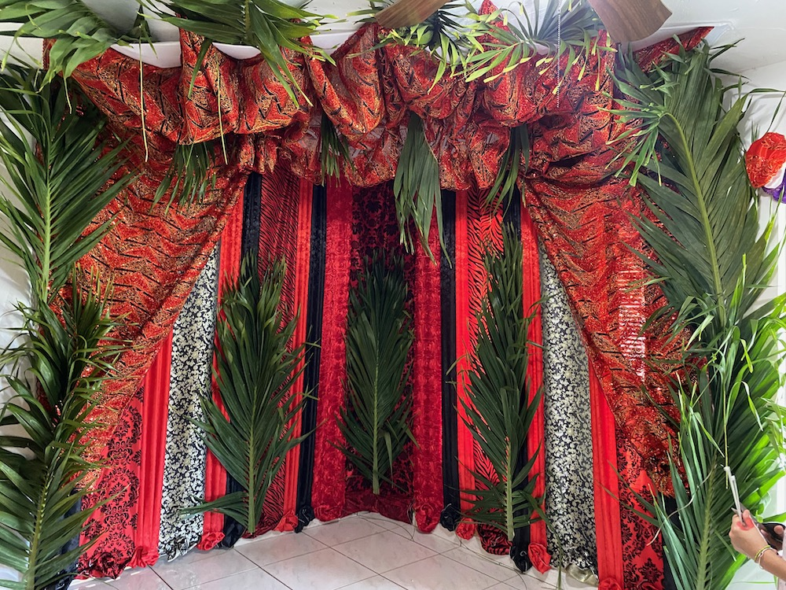

¿Qué es un Trono en la Santería?
El trono es uno de los lugares más sagrados dentro del cuarto de santo durante la ceremonia de Kari Osha (Hacer Santo). Representa el vientre de la madrina o padrino, el lugar donde se gesta y nace la nueva vida religiosa del Iyawó. Es el punto de conexión directa entre el Orisha y el iniciado durante el proceso de parto espiritual.
Simbolismo y Confección
El trono se decora con telas brillantes y de seda, alegóricas a los colores del Orisha tutelar que se está coronando. Se prepara para recibir al iniciado como a un rey o reina en su día del medio. Más allá del lujo visual, su importancia radica en ser la cuna donde el Iyawó pasará sus primeros 7 días y noches, protegido y en comunión con las deidades.
Durante las ceremonias previas, el trono suele estar cubierto con una sábana, simbolizando la pared abdominal que protege la gestación antes del nacimiento.
Tronos para Guerreros
Existe una particularidad con los santos guerreros (Elegguá, Oggún, Oshosi), a quienes se les arman dos tronos: uno dentro y otro fuera de la casa (o a la entrada). Esto nace del patakí (Osá Fogbeyo) donde Elegguá, decepcionado porque Obatalá mandó a otro a rasparlo, huyó al monte. Allí fue encontrado y consagrado sobre una piedra, acompañado por sus fieles amigos Oggún y Oshosi. Por ello, se les rinde tributo tanto en el monte (fuera) como en la casa.
Respeto al Trono
El trono es un espacio de suma seriedad. No debe ser construido por aleyos (no iniciados). Existe la costumbre en algunas casas de "tumbar" el trono tras el Itá o si el Iyawó pasa a Ifá rápidamente, pero muchos religiosos sostienen que el trono representa el periodo completo de 7 días de resguardo y conexión inicial, y debe respetarse como tal.